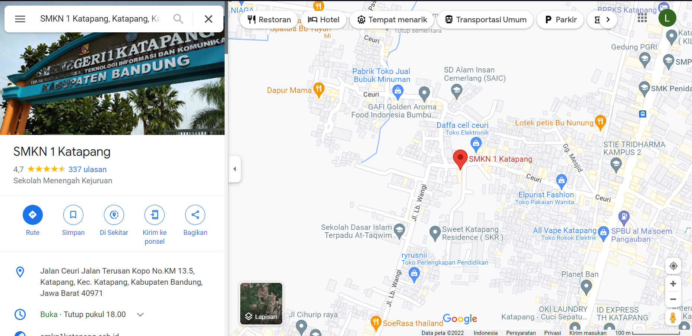

JavaScript adalah bahasa pemrograman populer yang digunakan untuk membuat situs dengan konten website yang dinamis. Faktanya, ada lebih dari 67,7 persen developer yang menggunakan JavaScript, lho!
Konten dinamis artinya konten dapat bergerak atau berubah di depan layar tanpa perlu mereload halaman. Misalnya saja, fitur slideshow foto, gambar animasi, pengisian poling, dan lainnya.
JavaScript sendiri sebenarnya biasanya dikolaborasikan dengan HTML dan CSS. Di mana HTML digunakan untuk membuat struktur website dan CSS untuk merancang style halaman website. Lalu, JavaScript berperan menambahkan elemen interaktif untuk meningkatkan engagement pengguna.
Sebagai contoh, ketika Anda memberikan like dan komentar di Twitter. Anda bisa melihat munculnya jumlah like dan komentar yang terus bertambah secara real time, tanpa direload.
Seiring perkembangannya, JavaScript tak hanya bisa digunakan di sisi client, tetapi juga di sisi server. Eksekusi bahasa pemrograman ini di sisi server dapat dilakukan dengan memanfaatkan platform framework JavaScript seperti Node.js, React.js, dan lainnya.
Dalam proses website development, JavaScript mampu menyulap website menjadi tampak lebih menarik dan interaktif, dengan konten-konten dinamisnya. Misalnya, konten yang bergerak dan memperbarui secara real-time tanpa perlu reload semua halaman website berkali-kali. Sebagai contoh, Google Maps.
Fungsi JavaScript selanjutnya ialah untuk membuat aplikasi mobile. Kalau dulu aplikasi mobile hanya bisa dikembangkan dengan bahasa pemrograman Java untuk Android. Sekarang, bahasa pemrograman ini sudah bisa digunakan dalam mobile API untuk membuat aplikasi mobile.
Pun pembuatan aplikasi mobile juga semakin mudah dengan adanya framework JavaScript khusus aplikasi mobile, seperti React Native. Dengan framework ini, Anda bisa membuat aplikasi mobile untuk dua sistem operasi sekaligus, yaitu Android dan iOS.
Tak hanya membuat halaman website, JavaScript juga dapat berfungsi untuk mengembangkan game online berbasis browser.
Untuk membuat game browser yang menarik, bahasa pemrograman JavaScript bisa dikombinasikan dengan HTML. Beberapa game populer yang menggunakan JavaScript di antaranya Lord of Ultima dan Flappy Bird.
Terakhir, seiring perkembangannya, bahasa pemrograman JavaScript tak hanya mampu bekerja di sisi browser saja, tetapi juga di sisi server dengan menggunakan Node.js.
Node.js ini akan mengeksekusi kode JavaScript pada sisi server sehingga dapat menjalankan situs, aplikasi web, dan game berbasis browser.
Node.js juga lebih mampu menangani banyak proses secara bersamaan, tanpa perlu menunggu satu proses selesai terlebih dulu. Sehingga proses bisa dilakukan lebih cepat.
Untuk Praktek Belum Bisa Karna Belum Diajarin ;)